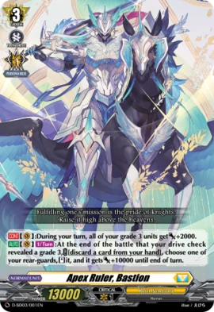
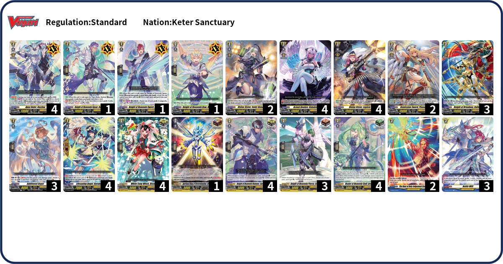

Who is Apex Ruler, Bastion?

"Captain of the Cloud Knights Heavenly Brigade, as well as the owner of the holy sword. Fully covered in shining armor himself, his mount is also similarly armored. Supposedly from the human race, but nobody knows his age. The face of the law-enforcing Cloud Knights, his judgement is just and strict, and his orders absolute. He commands both respect and awe from brigade members and the populace alike."

Deck Code: L9ZA
Bastion is 1 of 2 of the Start Decks without a keyword as their specialty, but that doesnt stop it from being good. Most of the support from this deck are from D-BT01, so you may or may not have difficulty obtaining the cards due to the cards being released a year ago. However, the deck is pretty decent, with crit pressure and multi-attack thanks to Lepisto and Phanuel. Unite with your allies and corner your opponent with powerful but costly effects!